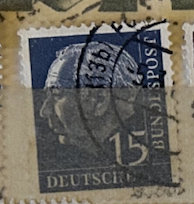
| SOURCE | TITLE| IMAGE MATCH | click to source page |
| eBay | Stamp Germany, Scott # 712 used | eBay | 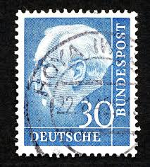 |
| eBay | Deutsche Bundespost Stamp 20 dm Theodor Heuss 1959/1957 40 Pfg Stamp Used-#5835 | eBay | 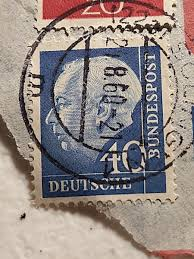 |
| Alamy | The first federal president of the federal republic of germany hi-res stock photography and images - Alamy | 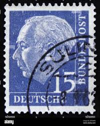 |
| Dreamstime.com | First President of Indonesia Sukarno Wax Figure at Madame Tussauds in Bangkok, Thailand Editorial Image - Image of pathumwan, president: 174572870 | 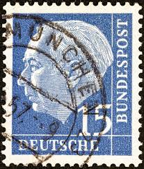 |
| Poppe Stamps | Poppe Stamps: German Federal Republic, 1954, 1113, Presidents - stamps for sale by theme and country | 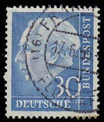 |
| Alamy | Round postage stamp hi-res stock photography and images - Alamy | 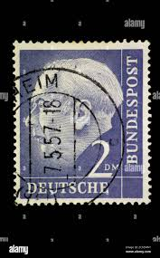 |
| Dreamstime.com | President Theodor Heuss Stock Photos - Free & Royalty-Free Stock Photos from Dreamstime | 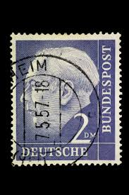 |
| HipStamp | Germany, Scott #712, Used | Europe - Germany & Colonies - Germany, General Issue Stamp / HipStamp | 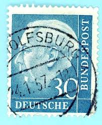 |
| Alamy | GERMANY - CIRCA 1956: A stamp printed in Germany, shows the 1st President of the Federal Republic of Germany, Prof. Dr. Theodor Heuss, circa 1956 Stock Photo - Alamy | 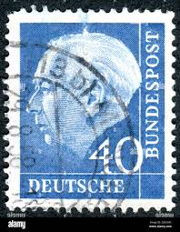 |
| eBay | GERMANY SCOTT # 720, USED, GREAT PRICE! | eBay | 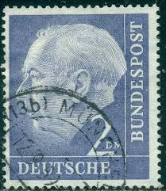 |
| eBay | Used PF Postage European Stamps for sale | eBay | 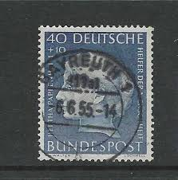 |
| Alamy | Warranty seal in hi-res stock photography and images - Alamy | 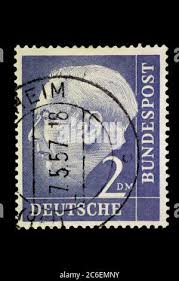 |
| HipStamp | Germany 712 1954 Used Damage | Europe - Germany & Colonies - Germany, General Issue Stamp / HipStamp | 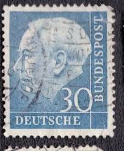 |
| Poppe Stamps | Poppe Stamps: West Berlin, 1959, B181, Presidents - stamps for sale by theme and country | 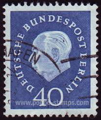 |
| PicClick | GERMANY DEUTSCHE BUNDES Post 1961 Famous Germans 15 Blue Luther -Used 26C $2.00 - PicClick | 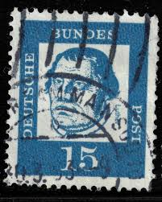 |
| HipStamp | Germany 1933-36 Early Issue Fine Used 25pf. NW-111503 | Europe - Germany & Colonies - Germany, Stamp / HipStamp | 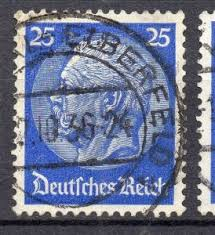 |
| eBay | Stamp Germany Deutsches Reich Hindenburg 4 Pfennig 1933 Mi. Nr. 514 (33595) | eBay | 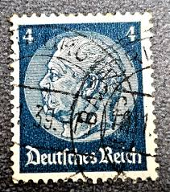 |
| Shutterstock | 40 Stamp: Over 2,521 Royalty-Free Licensable Stock Photos | Shutterstock | 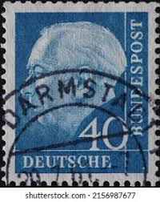 |
| eBay | West Germany - 1954 - Professor Dr. Th. Heuss - 15Pfg - Used - #06 | eBay | 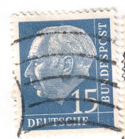 |
| eBay | GERMANY 1954 Professor TH Heuss 30 pfg (E2) | eBay | 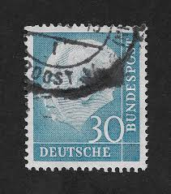 |
| eBay | GERMANY 1954 Professor TH Heuss 30 pfg (Z2) | eBay | 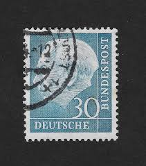 |
| eBay | Federal Germany, BUND BRD, 1953, Stamp 70 President Heuss, Used VF | eBay | 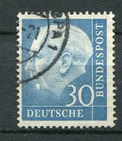 |
| Alamy | German third Reich Postage stamp depicting President Paul Von Hindenburg 1933 Stock Photo - Alamy | 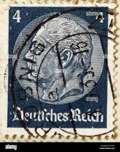 |
| Album Online | German Postage stamp depicting President Paul Von Hindenburg - Album alb3179532 | 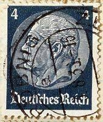 |
| eBay | German Stamps PF 1941-1950 Year of Issue for sale | eBay | 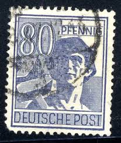 |
| eBay | Germany / Deutsches Reich 25 Stamp Blue Used Actual Stamp TKS265* | eBay | 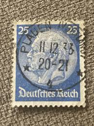 |
| HipStamp | Search "Martin Luther" / HipStamp | 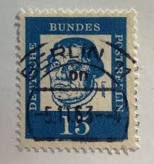 |
| eBay | GERMANY ~ Deuirches Reich ~ Pau Von Hindenburg ~ Lot of 2 ~ Posted ~ 1934 ~ D15 | eBay | 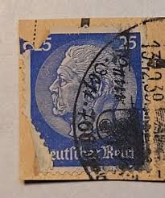 |
| 123RF | Postage Stamp, German Empire, Hindenburg 4 Stock Photo, Picture and Royalty Free Image. Image 59473270. | 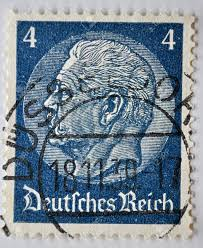 |
| Jace Stamps | Germany Scott 417 Used - C$0.30 : Jace Stamps, Quality Stamps since 1997 | 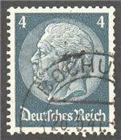 |
| eBay | Germany / Deutsches Reich 1934 PRESIDENT PAUL VON HINDENBURG 25 PFG Used -#5836 | eBay | 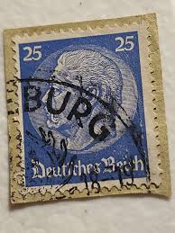 |
| Shutterstock | 1,749 German Pfennig Royalty-Free Images, Stock Photos & Pictures | Shutterstock | 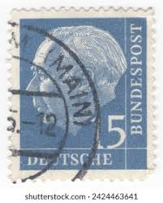 |
| eBay | GERMANY SOVIET OCCUPATION ZONE 1946 GOETHE FROM SHEET SCOTT 10NB11 PERFECT USED | eBay | 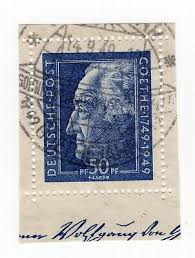 |
| Alamy | Germany after wwii hi-res stock photography and images - Alamy | 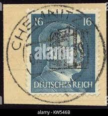 |
| Alamy | Theodor heuss price hi-res stock photography and images - Alamy | 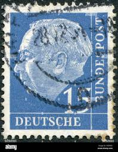 |
| eBay | Germany-Bavaria #153 used e21.3 12914 | eBay | 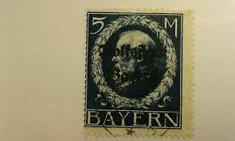 |
| eBay | 1954, Bundesrepublik Deutschland, 179-260 y, gest. - 1733692 | eBay | 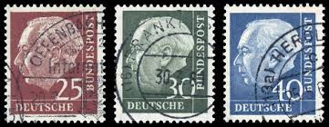 |
| eBay | Las mejores ofertas en F/Condición bastante buena (bien/Muy bien) políticos estampillas europeas | eBay | 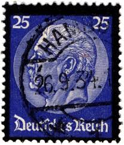 |
| HipStamp | Germany, Scott #395, Used | Europe - Germany & Colonies - Germany, General Issue Stamp / HipStamp | 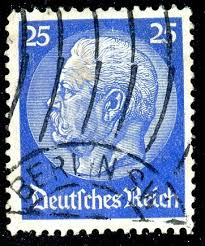 |
| Shutterstock | Germany- Circa 1947 Postage Stamp Printed Stock Photo 127564751 | Shutterstock | 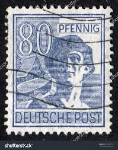 |
| HipStamp | Germany 430 1936 Used | Europe - Germany & Colonies - Germany, General Issue Stamp / HipStamp | 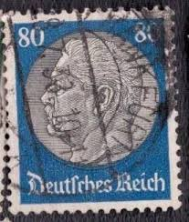 |
| HipStamp | Germany Scott 615 | Europe - Germany & Colonies - Germany, General Issue Stamp / HipStamp | 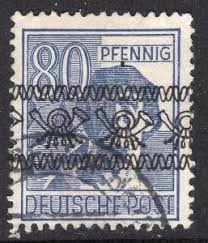 |
| eBay | Germany HEUSS 2 DM Pair Bogen Strip of 3 used on Piece of cover Lot#6528 | eBay | 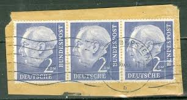 |
| Find Your Stamps Value | Value of reichspost pf 20 stamps | 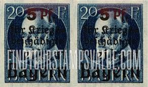 |
| eBay | Germany / Deutsches Reich 25 Stamp Blue Used Actual Stamp TKS221* | eBay | 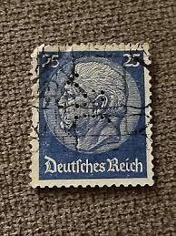 |
| eBay | Germany #695 XF Used Gem | eBay | 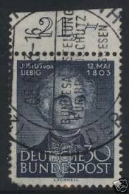 |
| eBay | Germany / Deutsches Reich 4m Stamp (Used Hinged) X26 | eBay | 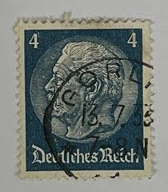 |
| eBay | BERLIN GERMANY Mi. #87 scarce used stamp! CV $36.00 | eBay | 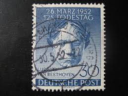 |
| Alamy | Paul von hindenburg hi-res stock photography and images - Alamy | 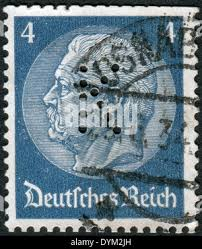 |
| eBay | GERMANY BERLIN Scott 9N115 USED (1of2) Cat $14 | eBay | |
| Dreamstime.com | Paul Von Hindenburg 1847-1934, 2nd President, 6 German Reichspfennig, Death of Hindenburg Serie, Circa 1934 Editorial Photography - Image of germany, postal: 161778527 | |
| eBay | LOKALAUSGABEN MEISSEN 1945 2-24 gestempelt TADELLOS SATZ ALTPRÜFUNG BPP(E8965 | eBay | |
| Stamp Auction Network | Prices Realized | |
| eBay | Berlin 186 stamped, Mi. 14,- | eBay | |
| HipStamp | Germany 425 used SCV $ 0.35 | Europe - Germany & Colonies - Germany, General Issue Stamp / HipStamp | |
| eBay | BAYERN Wolkstaat Mi 116IIA-127IIA + 128 IA-133 IA Used XF - CV +470 E (A2De3) | eBay | |
| eBay | Germany 1945 Post WWII LOCAL overprint (BINGEN) 80 Rpf. MNH /s1 #625 | eBay | |
| eBay | Stamp Germany Deutsches Reich Hindenburg 4 Pfennig 1933 Mi. Nr. 514 (33596) | eBay | |
| HipStamp | Saar Germany 5 Mark Postage Stamp #38 Bayern King Ludwig III St. Ingert Cancel | Europe - Germany & Colonies - German Colonies & Territories, General ... / HipStamp | |
| Todocolección | alemania 1960, passion festival - Buy Antique stamps of Germany on todocoleccion |